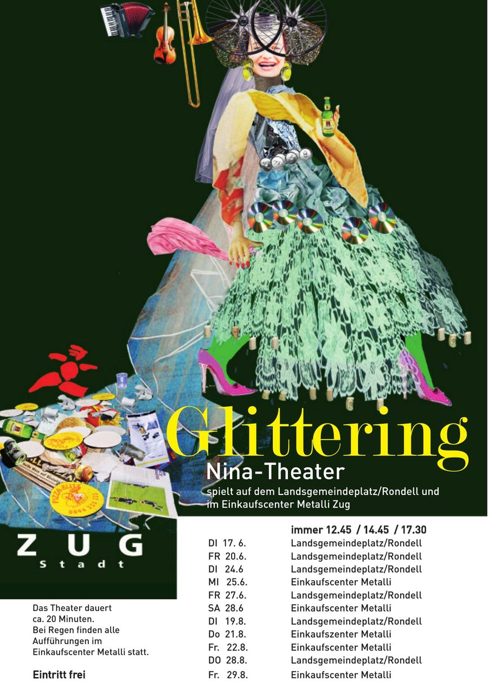
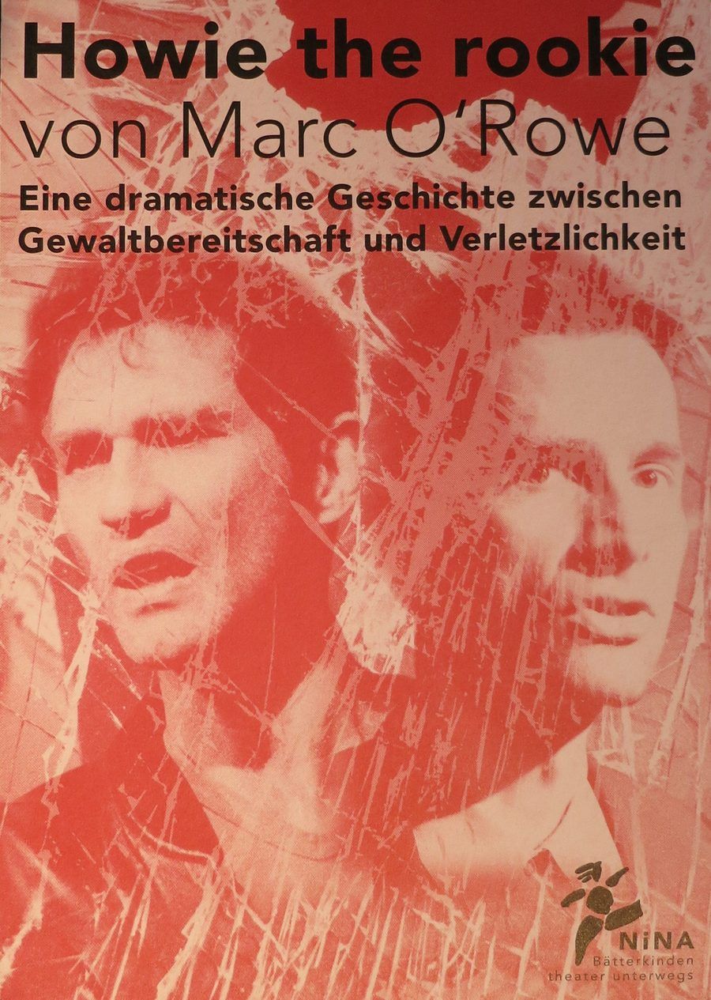
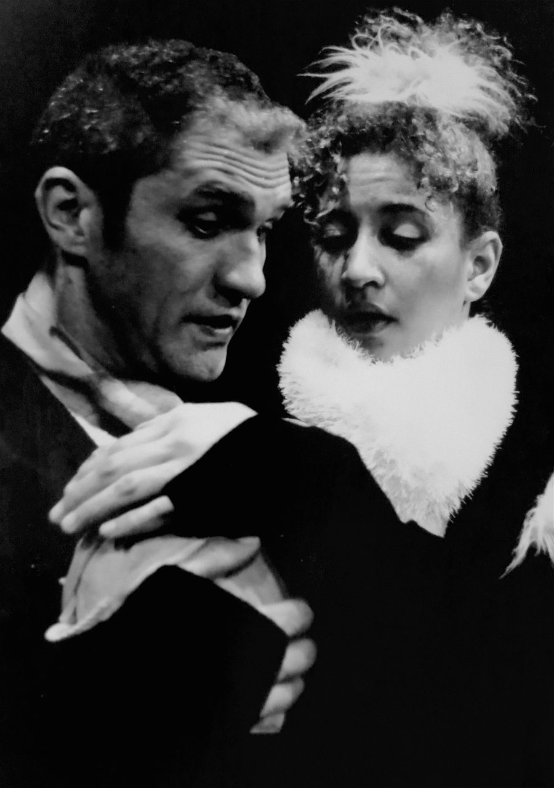
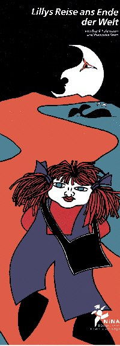

Baltz Mengis (2022)
Ein theatraler KlangGang durch die Eingeweide des 17. Jahrhunderts

AIRBNB (2020)
Ein Kammerspiel für ein Zimmer, zwölf Bilderrahmen und zwei SchauspielerInnen von Ueli Blum

Fluctus (2019)
Ein aus der Zeit gefallenes musikalisches Theaterprojekt in bewegten Bildern

Gschnorr (2016)
Die Hörshow von N!NA Theater

Man sieht nur, was man weiss (2013)
Eine Kirchenraum-Inszenierung

Familienbande (2011)

Titanic (2009)
Theater in Schräglage

Glittering (2008)
Das kleine Barocktheater zum Thema Littering

Das Fest (2007)
Ein Konzert mit viel Theater

In meiner Posaune muss ein Sandkorn sein (2005)
Eine literarische Begegnung mit Erich Mühsam

Der König kocht (2004)
Das Stück über kleine und grosse Könige

Howie the Rookie (2002)
Eine Geschichte zwischen Gewaltbereitschaft und Verletzlichkeit

Eier und Eltern (2001)
Eine poetische Liebesgeschichte

Lillys Reise ans Ende der Welt (2000)
Das Theaterstück für die ganz Kleinen
Der Home Delivery Service

Ein Anruf genügt und Geschichten werden Ihnen direkt ins Haus geliefert. Laden Sie Ihre Freunde oder Nachbarn zu einer ganz persönlichen Lesung bei sich zu Hause ein.